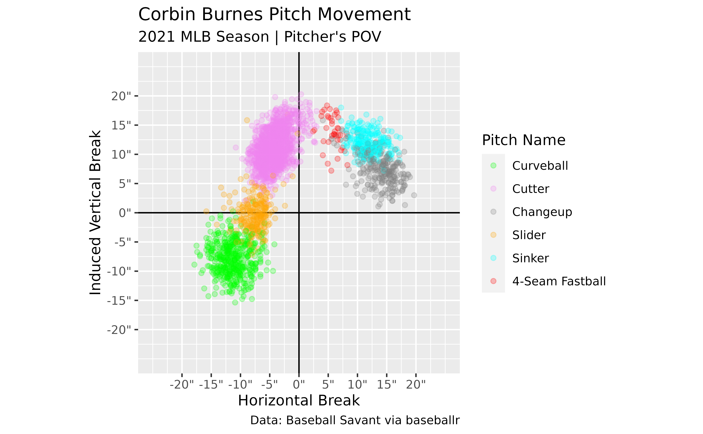
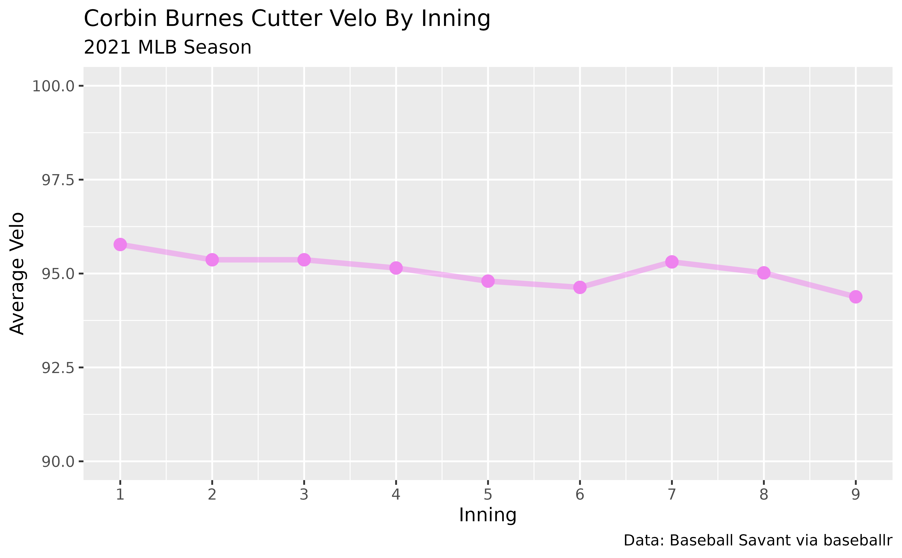

Using Statcast Pitch Data
Camden Kay
2023-03-15
Source:vignettes/using_statcast_pitch_data.Rmd
using_statcast_pitch_data.RmdIn this example, the baseballr package is used to
acquire Statcast data for Corbin Burnes for the 2021 season.
This data is then used to generate different plots to showcase his arsenal and his cutter’s velocity by inning.
Find Corbin Burnes’ MLBAM ID
burnes_id <- baseballr::playerid_lookup(last_name = "Burnes", first_name = "Corbin") %>%
dplyr::pull(mlbam_id)Use Burnes’ ID To Load Statcast Data
burnes_data <- baseballr::statcast_search_pitchers(start_date = "2021-03-01",
end_date = "2021-12-01",
pitcherid = burnes_id)This block will download all of Corbin Burnes’ pitches from March 1st through December 1st.
Clean Data
If this is your first time looking at Statcast data I recommend looking at their documentation for for the dataset returned. It’ll walk you through the data represented by each column and give you a better idea of the data points collected for each pitch.
Some of the more common data points used for pitching analysis:
-
pitcher: Pitcher’s MLBAM ID -
pitch_name/pitch_type: Pitch Name/Type -
release_speed: Velocity -
pfx_z/pfx_x: Pitch Movement -
release_spin_rate: Spin Rate -
spin_axis: Spin Axis -
release_pos_z/release_pos_z/extension: Release Point -
plate_z/plate_x: Pitch Location
Since we’re going to be making a scatterplot of Corbin Burnes’ pitch
movement, we need to make sure we have the data in the proper format to
match a traditional movement plot. The pfx_x and
pfx_z columns are both in feet so let’s create two new
columns and convert them to inches. pfx_x is also from the
catcher’s point of view so let’s also reverse it to be from the
pitcher’s.
# The glimpse function is something I use regularly
# to quickly preview the data I'm working with.
# Try it out if you haven't used it before!
#
#
# burnes_data %>% dplyr::glimpse()
burnes_cleaned_data <- burnes_data %>%
# Only keep rows with pitch movement readings
# and during the regular season
dplyr::filter(!is.na(pfx_x), !is.na(pfx_z),
game_type == "R") %>%
dplyr::mutate(pfx_x_in_pv = -12*pfx_x,
pfx_z_in = 12*pfx_z)
Create A Movement Plot
Now that we’ve created our new columns, let’s use them to plot how Corbin Burnes’ pitches move.
# Make a named vector to scale pitch colors with
pitch_colors <- c("4-Seam Fastball" = "red",
"2-Seam Fastball" = "blue",
"Sinker" = "cyan",
"Cutter" = "violet",
"Fastball" = "black",
"Curveball" = "green",
"Knuckle Curve" = "pink",
"Slider" = "orange",
"Changeup" = "gray50",
"Split-Finger" = "beige",
"Knuckleball" = "gold")
# Find unique pitch types to not have unnecessary pitches in legend
burnes_pitch_types <- unique(burnes_cleaned_data$pitch_name)
burnes_cleaned_data %>%
ggplot2::ggplot(ggplot2::aes(x = pfx_x_in_pv, y = pfx_z_in, color = pitch_name)) +
ggplot2::geom_vline(xintercept = 0) +
ggplot2::geom_hline(yintercept = 0) +
# Make the points slightly transparent
ggplot2::geom_point(size = 1.5, alpha = 0.25) +
# Scale the pitch colors to match what we defined above
# and limit it to only the pitches Burnes throws
ggplot2::scale_color_manual(values = pitch_colors,
limits = burnes_pitch_types) +
# Scale axes and add " to end of labels to denote inches
ggplot2::scale_x_continuous(limits = c(-25,25),
breaks = seq(-20,20, 5),
labels = scales::number_format(suffix = "\"")) +
ggplot2::scale_y_continuous(limits = c(-25,25),
breaks = seq(-20,20, 5),
labels = scales::number_format(suffix = "\"")) +
ggplot2::coord_equal() +
ggplot2::labs(title = "Corbin Burnes Pitch Movement",
subtitle = "2021 MLB Season | Pitcher's POV",
caption = "Data: Baseball Savant via baseballr",
x = "Horizontal Break",
y = "Induced Vertical Break",
color = "Pitch Name")
I like to use pitch_name to color my scatterplots as it
gives the full pitch name in the legend, but pitch_type
would also work if you prefer the shorter abbreviations (ex: 4-Seam
Fastball = FF). If you were to use pitch_type instead, be
sure to make a new vector for the colors.
Velo By Inning
Now let’s take a look at Corbin Burnes’ pitch velo by inning for his trademark cutter.
burnes_velo_by_inning <- burnes_cleaned_data %>%
dplyr::filter(pitch_name == "Cutter") %>%
dplyr::group_by(inning, pitch_name) %>%
dplyr::summarize(average_velo = mean(release_speed, na.rm = TRUE))
#> `summarise()` has grouped output by 'inning'. You can override using
#> the `.groups` argument.
burnes_velo_by_inning %>%
ggplot2::ggplot(ggplot2::aes(x = inning, y = average_velo, color = pitch_name)) +
ggplot2::geom_line(size = 1.5, alpha = 0.5, show.legend = FALSE) +
ggplot2::geom_point(size = 3, show.legend = FALSE) +
ggplot2::scale_color_manual(values = pitch_colors) +
ggplot2::scale_x_continuous(breaks = 1:9) +
ggplot2::scale_y_continuous(limits = c(90, 100)) +
ggplot2::labs(title = "Corbin Burnes Cutter Velo By Inning",
subtitle = "2021 MLB Season",
caption = "Data: Baseball Savant via baseballr",
x = "Inning",
y = "Average Velo")
#> Warning: Using `size` aesthetic for lines was deprecated in ggplot2 3.4.0.
#> ℹ Please use `linewidth` instead.
#> This warning is displayed once every 8 hours.
#> Call `lifecycle::last_lifecycle_warnings()` to see where this warning
#> was generated.